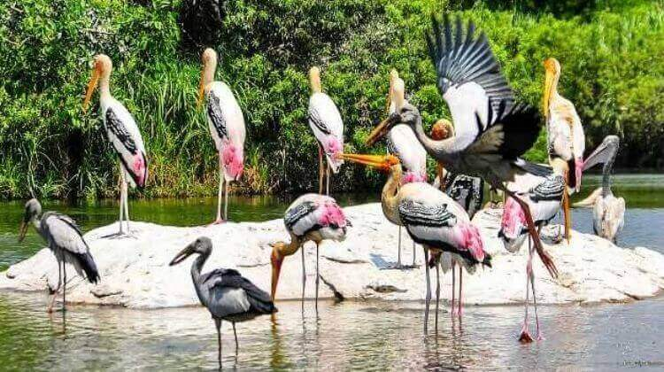

KOTTAYAM
Kottayam is one of fourteen districts in the state of Kerala, India. Kottayam district comprises six municipal towns: Kottayam, Changanassery, Pala, Erattupetta, Ettumanoor, and Vaikom. It is the only district in Kerala that neither border the Arabian Sea nor any other states.


ILLIKKAL KALLU
Illikkal Kallu is a monolith located on top of the Illickal Malaa in the Kottayam district of Kerala, India.The distance from kottayam railway station to illikal kallu is 57km. Situated at around 3400 feet above sea level, Illickal Kallu is a major tourist attraction in Moonnilavu and Thalanadu village of Meenachil taluk. Only one half of the original rock remains, as the other half of the rock has fallen off. The nearest town is Teekoy. Numerous mountain streams originate from this peak and flow down to form the Meenachil River. Tourists must trek 1 km to reach the summit of the peak. Illikkal Mala comprises three hills, each rising up to 3,400 ft above sea level. Each of the hills has a peculiar shape. One of them resembles a mushroom, which is why it is known as Kuda Kallu. The second hill has a small hunch on the sides and is therefore referred to as Koonu Kallu. There is a 1⁄2-foot-wide bridge called Narakapalam connecting these two hills. The beauty and the landscape of illikkal kallu is similar to that of the pillar rocks in Kodaikanal. It is said that the mythical medicinal herb Neela Koduveli grows here
KUMARAKOM BIRD SANCTUARY
Kumarakom Bird Sanctuary is situated at Kumarakom in Kottayam taluk of Kottayam district in the Indian state of Kerala, on the banks of Vembanad Lake. Set in the Kerala Backwaters, the bird sanctuary is a favourite haunt of migratory birds.The sanctuary is spread over 14 acres (5.7 ha)[4] on the southern bank of the Meenachil River River.[5] There is a system of paths for moving around within the sanctuary. Beyond the sanctuary, one can take a boat ride in Vembanad Lake or along the Meenachil River.The main attractions are local birds like waterfowl, koel, owl, egret, heron, cormorant, moorhen, darter, and brahminy kite, as well as the migratory gull, teal, tern, flycatcher, and other birds are seen here during their respective migratory seasons. Some of the migratory birds come from the Himalayas, and a few from Siberia

